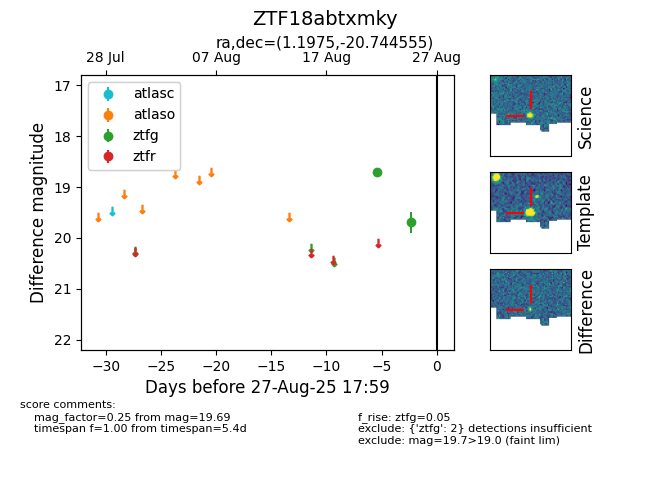

Target ZTF18abtxmky at 2025-08-27 17:59, see:
FINK: fink-portal.org/ZTF18abtxmky
Lasair: lasair-ztf.lsst.ac.uk/objects/ZTF18abtxmky
ALeRCE: alerce.online/object/ZTF18abtxmky
alt names
ZTF18abtxmky (ztf,fink)
coordinates:
equatorial (ra, dec) = (1.1975,-20.74456)
galactic (l, b) = (61.3727,-77.58572)
photometry
last ztfg=19.69
2 ztfg detections
